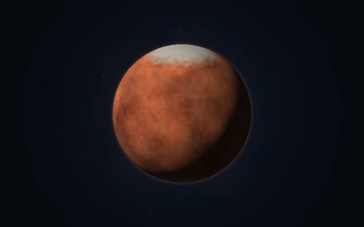

Lab / Robotics
GripBench
Compare two gripper jaws on the same simulated lift.

Mars globeDust-covered terrain and polar ice
MuJoCo replay
Choose a recorded trial.
Flat jaw
- Min. hold clearance
- —
- At cursor
- —
V-groove jaw
- Min. hold clearance
- —
- At cursor
- —
Telemetry
Flat jawV-groove jaw
Clearance is the distance from the table to the workpiece’s lowest point. The dashed line marks 80 mm. Shading marks the hold phase.
Methods & CAD
Both designs use the same 150 g workpiece, clamp settings and 100 mm lift command. A trial passes when the workpiece stays at least 80 mm above the table for the full two-second hold.
The browser replays recorded MuJoCo 4.0.1 runs sampled at approximately 50 frames per second. The pass result uses the full simulation trace. Contact is simplified, and each preset is a single simulated trial.